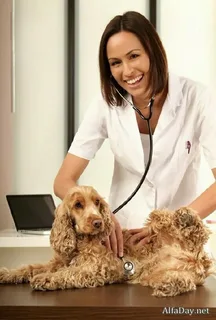

Об организации
Ветеринарная клиника "Четыре лапы"
Ветеринарная клиника оказывает широкий спектр ветеринарных услуг. В клинике работают высококвалифицированные, опытные и ответственные ветеринарные врачи, которые быстро и качественно решат проблеммы Ваших любимых питомцев В распоряжении врачей клиники имеется профессиональное современное оборудование.Кроме того, врачи ветеринарной клиники большое внимание уделяют профилактике и ранней диагностике заболеваний животных.В клинике имеется собственный авотомобиль, и врач может приехать на дом к своему пациенту, при необходимости забрать в клинику для обследования и привезти обратно.
График работы
Понедельник с 8:00-17:00
Вторник с 8:00-17:00
Среда с 8:00-17:00
Четверг с 8:00-17:00
Пятница с 8:00-17:00
Суббота-выходной
Воскресенье-выходной
Обед с 12:00-13:00
Услуги и цены

Осмотр животного
ЗаписатьсяПервичный приём от 1200 рублей
Повторный приём 950 рублей
Процедурный приём 370 рублей
Инъекция внутримышечная 110 рублей
Инъекция внутривенная 350 рублей
Инъекция субокципитальная 500 рублей
Приём экзотических живтных 1500 рублей
Приём повторный экзотических живтных 950 рублей
Приём диетолога 1200 рублей
Приём диетолога повторный 950 рублей
Консультация (без животного) от 350 рублей

Кастрация и стерелизация
ЗаписатьсяКастрация кобеля от 6000-13000 рублей
Кастрация суки от 7000-20000 рублей
Стерелизация кошки 3900 рублей
Кастрация кота 1750 рублей
Кастрация самца грызунов 2200 рублей
Кастрация самок грызунов 3000 рублей
Кастрация самца хорька,кролика 2200 рублей
Кастрация самки хорька,кролика 4500 рублей

Вакцинация животных
ЗаписатьсяВакцинация кошки Мультфел-4 от 1790-2070 рублей
Вакцинация кошки Биофел РСН от 1780-2290 рублей
Вакцинация кошки от бешенства Рабифелл с приёмом 1230 рублей
Вакцинация собаки Рабикс(R) с приёмом 1240 рублей
Вакцинация собаки Биокан DHPPI+RL с приёмом 1240 рублей
Вакцинация собаки Мультикан-8 с приёмом 1240 рублей
Ветеринарный паспорт

Узи кошек и собак
ЗаписатьсяУзи органов брюшной полости
Узи по беременности
Узи мочевого пузыря, почек 650 рублей
Узи сердца от 950 рублей
Узи ЖКТ 600 рублей
Узи перистальтики ЖКТ 300 рублей
Узи почек 500 рублей
Узи глаз 400 рублей
Узи головного мозга 400 рублей
Узи грудной клетки 450 рублей
Узи кожного покрова 400 рублей
Узи матки 450 рублей
Узи на наличие свободной жидкости в брюшной полости 350 рублей
Узи надпочечников 450 рублей
Узи печени и желчного пузыря 700 рублей
Узи поджелудочной железы 450 рублей
Узи предстательной железы 450 рублей
Узи семенников 450 рублей
Узи шейной области 500 рублей
Узи щитовидной железы 700 рублей

Рентген
ЗаписатьсяЦифровой рентген 1 проекция 850 рублей
Цифровой рентген 2 проекции 1400 рублей
Описание рентгеновского снимка 500 рублей
Рентгенологическое обследование черепа,шеи 1450 рублей
Рентгенологическое исследование органов грудной полости 2000-2700 рублей
Рентгенологическое исследование тазобедренного сустава
Рентгенологическое исследование локтевого сустава

Другие услуги
Стоматология
ЗаписатьсяПриём стоматолога 1350 рублей
Чистка зубов ультразвуком , кошка (с рентгеном ,анастезией) 5100 рублей
Субтотальная экстракция зубов,кошка/ собака 3000/6700 рублей
Экстракция 1 зуба, кошка / собака 7600/8300
Стачивание зубов у грызунов 1020 рублей
Обрезка передних зубов кролика 470 рублей
Груминг
ЗаписатьсяПриклеивание "Антицарапок" 300 рублей
Обрезка когтей кошки/кролики 250 рублей
Обрезка когтей собакам до 15 кг/более 15 кг 370/400 рублей
Подготовка к вязке и вязка
ЗаписатьсяВязка собак 1000 рублей
Онлайн консультация
ЗаписатьсяКонсультация специалиста онлайн 900 рублей
Специалисты
Иванов Дмитрий Александрович
 Записаться
Записаться
Главный врач клиники,врач-терапевт, врач визуальной диагностики (УЗИ, рентген) Закончил Марийский аграрный колледж по специальности “Ветеринария”. В данный момент получает высшее образование в МарГУ, по специальности “Ветеринария”. Пройденные курсы: - в 2021 годЫу прослушал лекции на тему: “Визуальная диагностика грудной полости, брюшной полости” в г. Екатеринбурге, лектор Видянова Зоя Борисовна, врач визуальной диагностики высшей категории - курсы УЗИ мелких домашних животных в г Екатеринбург, лектор Видянова Зоя Борисовна, врач визуальной диагностики высшей категории - декабрь 2021 года, прошел обучение по торакальной рентгенографии в г Екатеринбург, лектор Клавдия Навлетова - В 2021 году прослушал лекции по теме: Внутренние болезни. Модуль 1. “Анамнез, осмотр, рутинные тесты и диагностический план ” Модуль 2. “Нефрология – болезни почек и мочевыделительных путей” Модуль 3. “Анемии, болезни почек и МВП, репродуктивных органов”, в Образовательном центре коллегии ветеринарных специалистов “ Eduvet ” - в мае 2022 года прошел обучение по рентгенограмме грудной клетки, лектор Симаков Матвей Сергеевич, ведущий специалист визуальной диагностики в клинике Вет Сити Центр, г Москва
Волкова Ольга Ивановна
 Записаться
Записаться
Врач общей практики. Лечение всех внутренних болезней животных (гастроэнтерология, нефрология, пульмонология, инфекционные болезни, гематология, базовая неврология, оказание экстренной помощи). Основная специализация - онкология, интенсивная терапия. В 2016-2021 учёба в РУДН, аграрный факультет, специалитет ветеринария (г. Москва). 2021-2023 Программа интернатуры в Ветеринарной клинике "Белый Клык". 2018-2023 Работа в Ветеринарной клинике "Белый Клык".
Стрельцова Ирина Вениаминовна
 Записаться
Записаться
Врач-терапевт, анастезиолог
Ситникова Юлия Алексеевна
 Записаться
Записаться
Врач-терапевт, стоматолог, офтальмолог
Кузнецова Анна Алексеевна
 Записаться
Записаться
Врач-терапевт, кардиолог, УЗИ-специалист
Шабалина Мария Валентиновна
 ЗаписатьсяВрач-терапевт